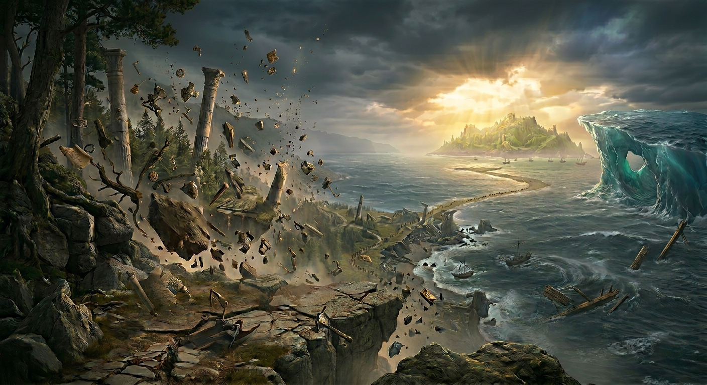

LARP Archeon לאר״פ ארכאון
היקום הנוכחי מתפוגג, והאחריות על היקום הבא בידינו.
לאר״פ ארכאון הוא משחק תפקידים חי של העמותה למשחקי תפקידים בישראל.
הנבואות מספרות על הרגע שבו היקום הנוכחי נמחק ואחד חדש נוצר.
יש לנו הזדמנות להיות אלו שיכתיבו את המציאות של היקום הבא.
לאר״פ ארכאון מתמקד במספר קבוצות הנלחמות על השפעה ושליטה ביקום חדש.
לכל קבוצה יש מטרה להצליח להשיג כמה שיותר שליטה בעיצוב היקום החדש ולבחור במי מהקבוצות האחרות היא תומכת: כל ציר מחולק לשתי קבוצות המייצגות אידיאלים סותרים, אך באופן אישי (וקבוצתי) יש לכל דמות שאיפה לשמור על האיזון בצירים האחרים באופן שתואם את תפיסת עולמה האישית. לקריאה על הקבוצות
המשחק מתמקד בלחימה אך כולל גם משחק פוליטי, חברתי ואישי: ניתן יהיה לחזק את האידיאל שלך בעזרת שכנוע דמויות מקבוצות אחרות להילחם עבור הקבוצה שלך והשקעת משאבים כדי להבטיח שהקונספט שלך יתקיים במציאות החדשה ולא יעלם לעד.
בסוף המשחק הדמויות יגלו איך נראה היקום החדש
- תאריכים 30-31.10.2026 (כולל הקמה ופירוק)
- מיקום פארק מקורות הירקון
- גיל 16+
- קבוצות 8 קבוצות, 10-15 דמויות בכל קבוצה
- סגנון המשחק פנטזיה נמוכה: ללא גזעים או כוחות (דמויות יכולות להאמין בקסם או אלים)
צוות המשחק
- יותם שפירא, א. משחק
- איתי גולדרייך, א. לוגיסטיקה
- מיטל גולדרייך, א. בירוקרטיה
- בן אנגלמן, מאסטר שטח
- גל-ים וכשטיין, ב. משחק
- שאלות? כתבו לנו: archeon.larp@gmail.com
ניתן לעקוב אחרי עדכונים בקבוצת הפייסבוק שלנו.